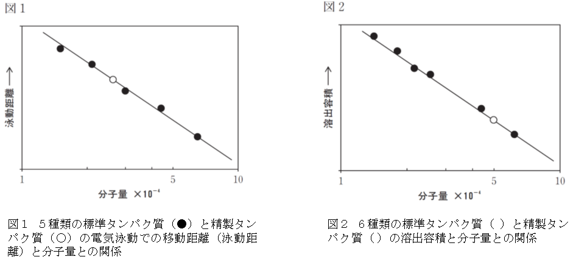
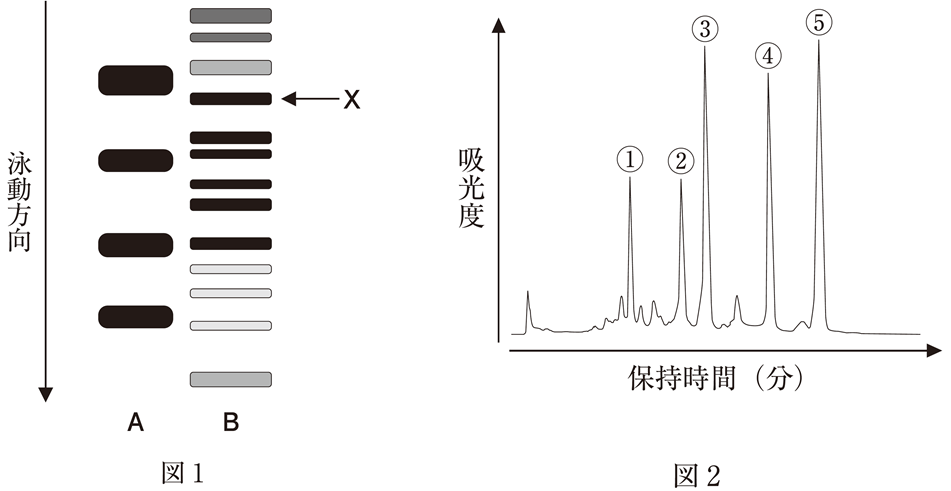
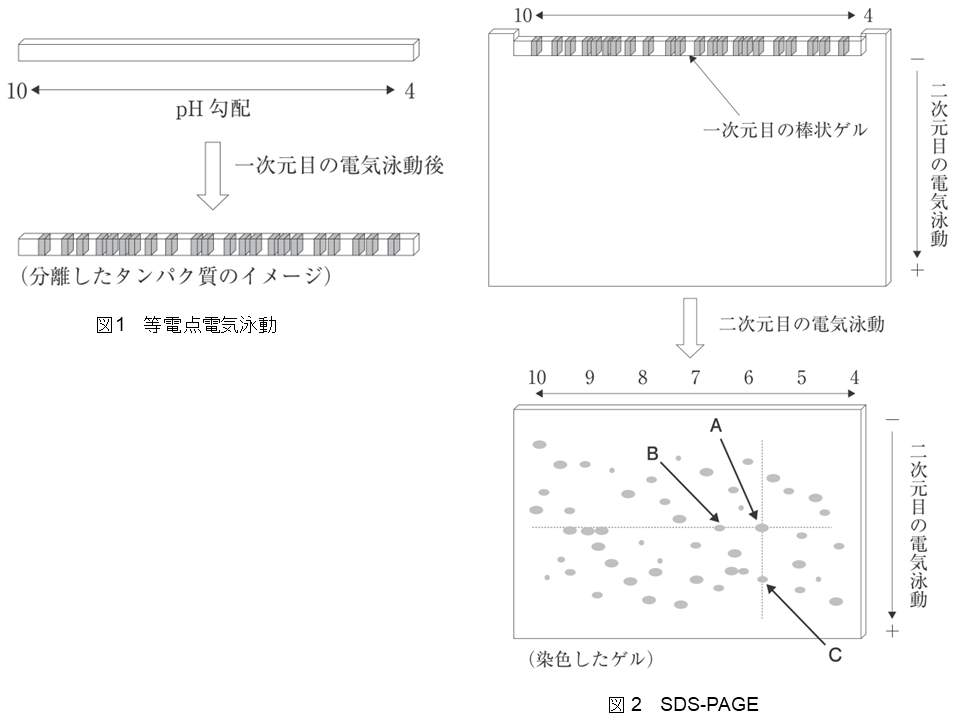

電気泳動において、イオン性物質の移動速度と比例するのはどれか。1つ選べ。
【正解】 2
【解説】
電気泳動におけるイオン性物質の移動速度（泳動速度 v）は、イオンを球形粒子と近似し、ストークスの法則を適用すると、電場の強さを E、イオンの電荷を q、溶液の粘度を η、イオンの半径を r として、以下の式で表されます。
v = (q・E) / (6πηr)
電気泳動において、イオンの泳動速度に関する記述のうち、正しいものはどれか。2つ選べ。
【正解】 3, 4
【解説】
問1と同様に、ストークスの法則に基づく泳動速度の式を用いて確認します。
v = (q・V) / (6πηr・d)
ここで、V は電圧、d は電極間の距離です。
電気泳動法に関する記述のうち、正しいものはどれか。2つ選べ。
【正解】 1, 4
【解説】
電気泳動法に関する記述のうち、正しいものはどれか。2つ選べ。
【正解】 2, 4
【解説】
A群に示す(1)〜(5)の各目的に対応する最も適切な検出法を、B群の選択肢からそれぞれ選んで組み合わせなさい。
【A群】
【B群の選択肢】
【正解・対応】
マウスのある組織から目的のタンパク質を精製し、その性質を明らかにするため、以下の2つの実験を行った。実験方法と考察に関する記述のうち、正しいものはどれか。2つ選べ。
【実験1】 精製したタンパク質のジスルフィド結合を還元後、ドデシル硫酸ナトリウム (SDS)-ポリアクリルアミドゲル電気泳動法を行った。ゲル中のタンパク質を染色すると、単一のバンドが観察された。分子量が既知の5種類の標準タンパク質についても同様の操作を行い、図1の結果を得た。
【実験2】 精製したタンパク質を用いてゲルろ過クロマトグラフィーを行った。分子量が既知の6種類の標準タンパク質についても同様の操作を行い、図2の結果を得た。

【正解】 1, 4
【解説】
タンパク質Ｘを含む細胞抽出液（試料ア）をドデシル硫酸ナトリウムポリアクリルアミドゲル電気泳動（SDS-PAGE）及びサイズ排除クロマトグラフィー（SEC）により分析した。SDS-PAGE に際し、試料 ア にSDS と2-メルカプトエタノールを添加して前処理した（試料 イ ）。図1 のレーンＡは分子量が 25 kDa、35 kDa、40 kDa、55 kDa の 4 種の分子量マーカータンパク質を示し、レーンＢは試料 イ を分離したときの泳動結果である。図2 は精製したタンパク質Ｘ溶液（試料 ウ）と上記の 4 種の分子量マーカータンパク質を混合して分離したときのクロマトグラムである。以下の記述のうち、正しいのはどれか。2つ選べ。

【正解】 2, 3
【解説】
二次元電気泳動は、等電点電気泳動とSDSポリアクリルアミドゲル電気泳動（SDS-PAGE）を組み合せたもので、ある生体試料中の多種多様なタンパク質をそれぞれ固有の等電点と分子量の違いを利用して分離する方法である。図1と図2は、二次元電気泳動の概要と実験結果を示したものである。
【図1 等電点電気泳動】 pH 4～10の連続的なpH勾配を形成させた棒状のゲルを準備する。このゲルを用いて電気泳動すると、試料中の各タンパク質はそれぞれの等電点の位置までゲル中を移動する。
【図2 SDS-PAGE】 等電点電気泳動により試料中のタンパク質を分離した棒状ゲルを、SDS-PAGEの分離ゲルの上に移し、一次元目の等電点電気泳動と直角の方向に電気泳動する。タンパク質は、その分子量に応じた位置まで移動する。
【実験結果】 電気泳動の終了後、泳動用のガラス板から取り出したゲルを洗浄し、クマシーブリリアントブルーでタンパク質を染色したところ、50個のスポットを検出した。図2中のスポットAは、等電点5.8、分子量56,000のタンパク質である。
このようなタンパク質分析法とその実験結果に関する記述のうち、誤っているのはどれか。1つ選べ。

【正解】 3
【解説】
キャピラリー電気泳動に関する次の記述のうち、正しいものはどれか。2つ選べ。
【正解】 4, 5
【解説】
キャピラリー電気泳動に関する次の記述のうち、正しいものはどれか。2つ選べ。
【正解】 4, 5
【解説】